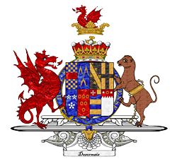
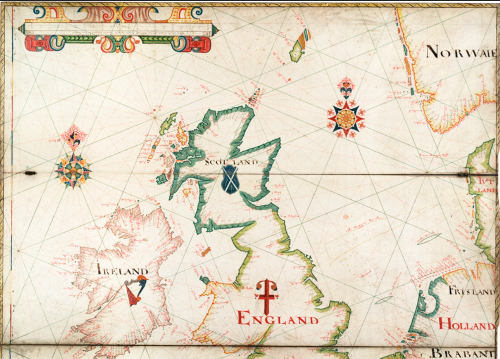
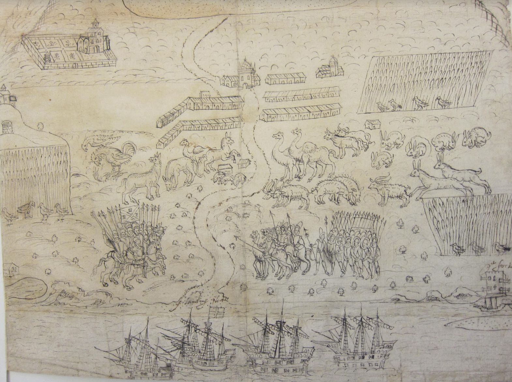
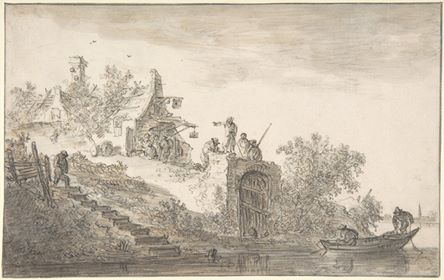
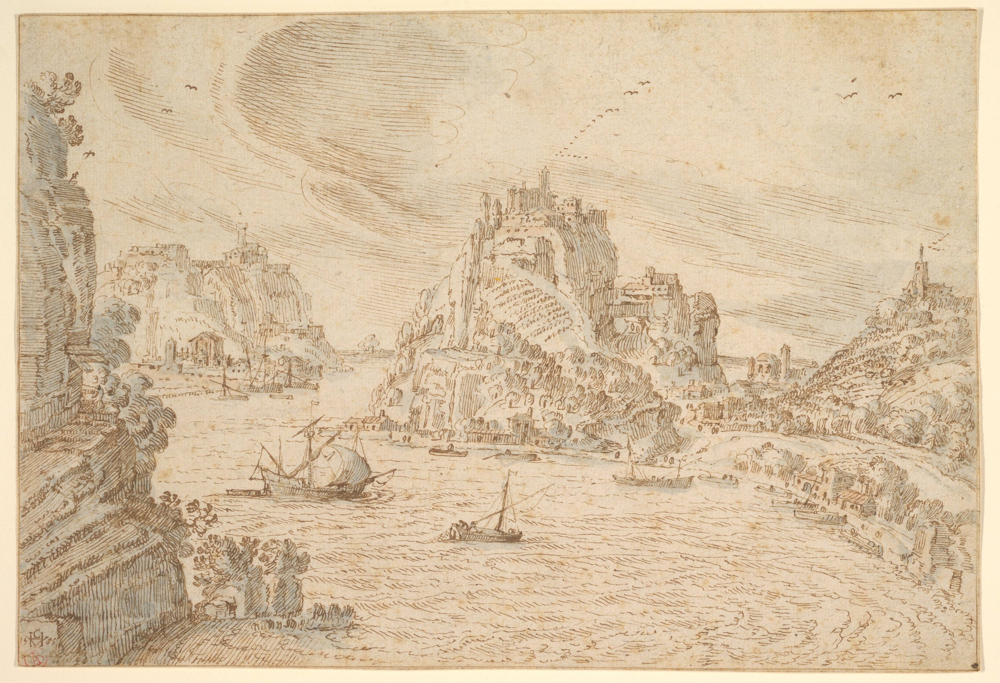

England
Fuerteventura
Rio De Oro
Isle De Lobos
Cape Verde
Southampton
The Voyage of The Red Dragon
Prelude

The Voyage of the Red Dragon is a look into the life of the lives of Privateers in the Sixteenth Century. Here we follow the account of Thomas Hood, the pilot of the lead ship the Red Dragon, as well as the accounts of those both on the journey and those affected by its ravages. Join the voyage of The Red Dragon.
License to Piracy
Archive

The Red Dragon expedition was backed by the Earle of Cumberland with the blessing of Queen Elizabeth and the letter of Marque from Dom Antonio, the rival pretender to the Portuguese throne. They left Gravesend England on June 24, 1586 with four ships. Robert Wirthington led the voyage with the main pilot of the lead ship being Thomas Hood. Their goal was to sail to the strait of Magellan to the pacific in search of plunder from Spanish ships. The voyage took around thirteen months from fall 1586 to summer 1587.
The Sack of Lanzarote
Archive

In the beginning, the Red Dragon stayed to the coast of Africa to search for basic supplies for the voyage. On the way to the island of Fuerteventura, the Red Dragon searched for canters, which was a bastardization of Canteras or Spanish fishing vessels. When they landed at Fuerteventura they had found that the Moors had sacked a nearby island called Lanzarote merely a month before. This kept all the citizens and officials on guard of new ships. Following this news the Red Dragon set sail not wishing to be caught by Spanish officials.
The Saharan Coast
Archive

The voyage then continued to the Rio De Oro coast of west Africa. They sought fishing vessels there as this was a popular migration spot of sardines. The Red Dragon disembarked on the Saharan coast near the Canarie Islands and were greeted by two individuals. The men were presumably Berber fishermen and “cam down wyth a flag of trus.” The captain then spoke at length with one of them and brought a small crew of men who all fished with the man. From the man they learned that there were no supplies to be had except from what the Moors bring to trade with.
Sierra Leone
Slaughter At the Watering Place
Archive
After stopping at the Saharan coast the Red Dragon then moved on to Sierra Leone as Thomas Hood and others had been to the area on previous voyages. Here they would stop for the “watering place” to acquire supplies for their voyage. Previously voyages had been allowed to gather resources from the area if they presented a tribute of wine to the leader of the Zapes. Zape is actually an umbrella term for several tribes in the area but had been brought under the rule of the Manes. Unbeknownst to the crew of the voyage there had been a voyage a few weeks previous led by Thomas Cavendish. The meeting of Cavendish and the Zapes was quick and violent as Cavendish’s men, through the knowledge of a detained Portuguese man, looted and burned a Zape village. This led the Zape people to strike back against Cavendish’s men.
Cavendish’s initial attack had spoiled the goodwill between the Europeans and the Zapes. Six weeks after the skirmishes between the two parties the Red Dragon landed at the watering place. The Zapes had prepared by reinforcing the area and demanded a tribute of wine and clothes rather than just wine. Not expecting the higher demands and believing that they were being treated unfairly Negotiations broke down. After that the Red Dragon moored in the watering place and then skirmished with the local Zapes. After beating back the Zapes they then cleared the trees surrounding the area as both a defensive strategy and a source of timber. The next few days were marked by a quiet tension as the Red Dragon collected supplies of freshwater, fish, timber, and even a crocodile. The gathering of supplies without consent was a major act of provocation.
The next portion is marked by extreme violence and a ominously easy tone of the narrator Thomas Hood. Hood mentions the act of bringing a woman on board while the captain was away, presumably non-consensually. The days following were mixes of gathering resources and acts of large scale atrocities. The first of which being the captain bringing one hundred and fifty men ashore to pillage rice and burn the Zape village. They returned the next day to burn the rest of the houses.
Rio De La Plata
The Three Slavers
Archive
After the sack of Sierra Leone the Red Dragon crossed the Atlantic to south America in search of the strait of Magellan. It was December when Hood steered them down the coast of South America. They were now in the Rio de la Plata. In January they reported seeing a sail in the distance. The next day this became two sails, two slaving ships of three on their way to Buenos Aires. These ships were tasked by the Bishop of Tucumán to bring forced labour, evangelizing priests, and material to build sugar mills and churches. The bishop had largely been accused of being less interested in faith and more so in business.
Notable members on the slaving ships include merchants such as Diego de Palma and Lopo Vaz Pestana as well as the clergyman friar Francisco Salzedo. The slavers held what was a large capacity of slaves at the time, totaling one hundred and twenty slaves between all of three ships. Two of the slave ships were captured by the Red Dragon and consisted of many Spaniards, Portuguese, and around eighty slaves. After taking on so many new mouths to feed the Red Dragon was running into more serious issues of provisioning. Hood then suggested they stop by a place he called “sell eyland [seal island].”
Two Islands and the Coast
Archive
They then stopped on the Isla de Lobos a small island off the coast of present day Uruguay which sat at the cusp of the Rio de la Plata. The Red Dragon thus spent the next three days hunting seals, gathering provisions on another island which they referred to as Green Island, otherwise known as Isla de Gorriti, and on the shore of Punta del Este. After the hunting spree the crew decided it would be best to dump the sugar they had pillaged from the slavers in favor of the seal carcasses which would feed the enlarged population. They briskly hurried toward the strait of Magellan to find a Spanish port in which to sell the slaves.

While the Red Dragon sailed for the strait of Magellan it was becoming obvious they may not make it in time before winter came. Apparently even though the English did not speak much with their Spanish captives, the Portuguese were willing to talk. One of the Portuguese is even mentioned as having the idea of turning back to Brazil before winter began. Not having come to a consensus on what to do they could agree that they did not have enough to provisions to provide for everyone. They then decided to strip the slave ships of parts and leave around one hundred captives stranded thirty leagues from the shore. Testimonials of the encounter do not say what befell those stranded by the voyage but there were a handful of survivors who recounted an attack by the corsair “Roberto.” Eventually the crew came to the final decision of turning back to Brazil in late February when conditions started becoming too hazardous to continue.
Salvador
War for the Colony
Archive
On the journey up the coast the fleet constantly disbanded and rebanded as tensions ran high. Provisions were growing low. At the end of March a couple mariners died of malnutrition. Eventually the fleet found an island near the Camamu river which they were able to restock on many provisions such as water, fruit, beef, chicken, etc. Even Hood who was largely secular praised God for the find. After poaching the provisions the Red Dragon found that Salvador had closed its doors upon the arrival of the English fleet. There the fleet met a pair of hulks from Flushing who had arrived to trade with the Portuguese but instead agreed to fight alongside the Red Dragon. The British then picked off many ships in the bay and took others captive. One of the few Portuguese prisoners the Red Dragon had not abandoned, Lopo Vaz Pestana, then escaped and swam to Salvador. Salvador, now expecting an imminent attack, gathered a local militia as the fortress guarding the bay only accounted for thirty soldiers. Vaz then went on to lead around thirty men himself to take back a smaller ship taken by the fleet which had drifted too far from them.
In the next week the Red Dragon moved with relative ease burning plantations, stealing livestock, and gathering provisions while Salvador raised enough men to combat them. They were able to muster between two hundred and three hundred men who filled a small galleon and four smaller ships. The British had set up at the mouth of the Paraguaçu River where they gathered fresh water and took over several buildings. Here would be the site of fighting between large groups of English and parts of the Salvador militia. Here the natives joined Salvador in fending off the invading pirates. Here Hood takes a break from journaling the days of the voyage, assumably while in combat, so most of the information of the battles are recorded by the merchant Saracoll. Most of the conflict took part from the gathering of provisions as the crew was ambushed attempting to restock.
One major battle happened on the island of Itaparica when the crew attempted to steal cattle and were met by a group of one hundred and fifty natives and Portuguese. Through heavy losses they were still able to claim seventeen bullocks. The fighting continued through May in the bay of all Saints. The English were being starved by the Luso-Indigenous strategies which included hiding any food stuffs and cattle in places where the Red Dragon appeared. This was especially troublesome as the privateers were easily read in their conquest of beef. The attacks ended as the Red Dragon negotiated with Salvador to return the captured men, as well as the sinking of the Dorothy. The fleet then shed some of the ships in worse condition and sailed back for England.
The Return
Archive
Their return voyage was a disaster. Wirthington had decided they should sail back to Cape Verde rather than ride the Gulf Stream to England. The pilots of the voyage made miscalculations and missed their mark adding two months to the voyage. Hood requited his anger at the captain for this decision. The fleet limped back to the Southampton harbor in September with little to show for their thirteen months at sea, likely with half the crew they departed with.
The Journey Goes Deeper
Archive
Thank you for joining us on the Voyage of the Red Dragon!
If you are interested in reading more about this crew and their exploits, please explore the archives for more information on each leg of the journey, as well as maps, manuscripts, and much more.
Contributors
Researchers
Gabriel Rocha
Maggie McNulty
Artists
Marissa Fu
Kaci Kwiatek
Developers
Ben Rodia
Axel Mortimer
Stephen Gross
Su Hnin Pwint